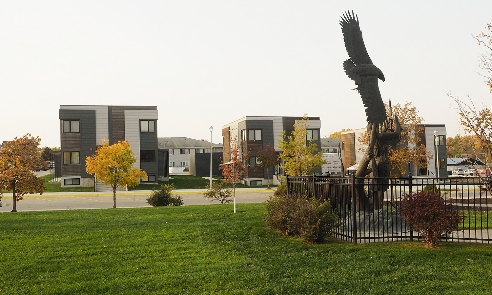
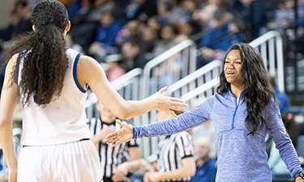

The Missing Native American Boys of Nebraska
For every Native American girl missing in Nebraska, two Native boys are missing.
Last year, when 22-year-old Gabby Petito’s missing and murder case was making whirlwinds, some activists questioned the silence on missing and murdered Native American women. But missingness may not only be predominant among the Native American girls and women; perhaps the most vulnerable group is teenage boys.
More than two-thirds of missing Native Americans in Nebraska are boys under the age of 17 years as per a study. Dr. Tara Richards and Dr. Emily Wright, criminology and criminal justice faculty members University of Nebraska Omaha conducted the study in association with Nebraska State Patrol.
The findings from the study further showed missing Native American boys in Nebraska are outpacing the missing person rate for White people and other races and are second only to Black people.
The data also showed that several of the Native American boys who returned are going missing repeatedly at a higher rate (9.6%) than the state average (2.9 %). A large section of the children was also found to be missing from out-of-home care placement. Nebraska Foster Care Review office observed a high prevalence of mental health challenges and substance use among the children.


A Fifth Imprisoned
A study by the Havard University indicated incarceration rates in North Omaha are among the highest in the country.
A century back jobs at the railroads and meatpacking industries had made the neighborhoods in North Omaha bustling with Black migrants from the South. But with the industries steering away from the region, the economic downturn has proven to be a social disaster for the Black community.

A Home Ownership Program is Changing the Landscape and Lives
Like many Native communities, housing is a critical priority for the Winnebago Tribe, residing in rural northeast Nebraska.
Programs and partnerships across the community are helping more tribal members realize the dream of home ownership, a first in the history of many families. The Housing Program includes Down Payment Assistance for its members to construct homes on the reservation.
Reigning Healthcare
If you are looking for diversity, equity, and inclusivity, is healthcare the undisputed champion? A 2020 report by the University of Nebraska Medical Center recorded steady growth since 2007. So what set the pace for this transformation?
Dr. Kirti Gupta a practitioner of Internal Medicine and a board member at CHI Health, Omaha talks about how women medical practitioners in decision-making roles sparked the change.

Tech, Sports And Beyond
How has it been for the black entrepreneurs since 2020? Forbes magazine reported black women entrepreneurs almost doubled their funding during the year.
We have a concurring voice in Chevelle Saunsoci, Division I basketball player, university team coach for NCAA and founder DVLP, one of the success stories in Nebraska’s small business sector.